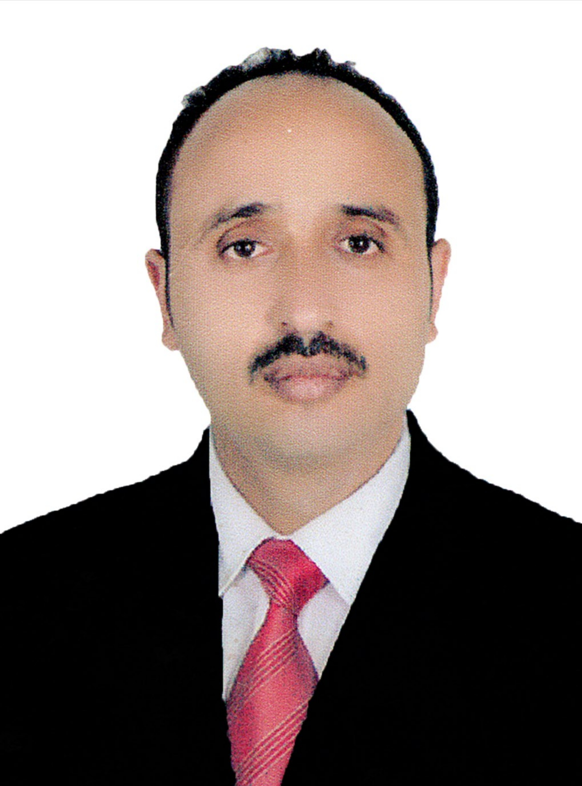

د. صلاح الأهدل
رئيس التحرير
بكالوريوس مختبرات وإدارة مستشفيات - مدير مكتب الصحة

أ. فاطمة عباس
مدير التحرير
أخصائية تغذية علاجية

مهندس عادل مقبل
مدير التحرير التنفيذي
خبير بيئي

د. منى الشرعبي
عضوة هيئة التحرير
أخصائية صحة عامة

د. خالد المنصوري
عضو هيئة التحرير
استشاري أمراض القلب

أ. سارة علي
عضوة هيئة التحرير
أخصائية نفسية